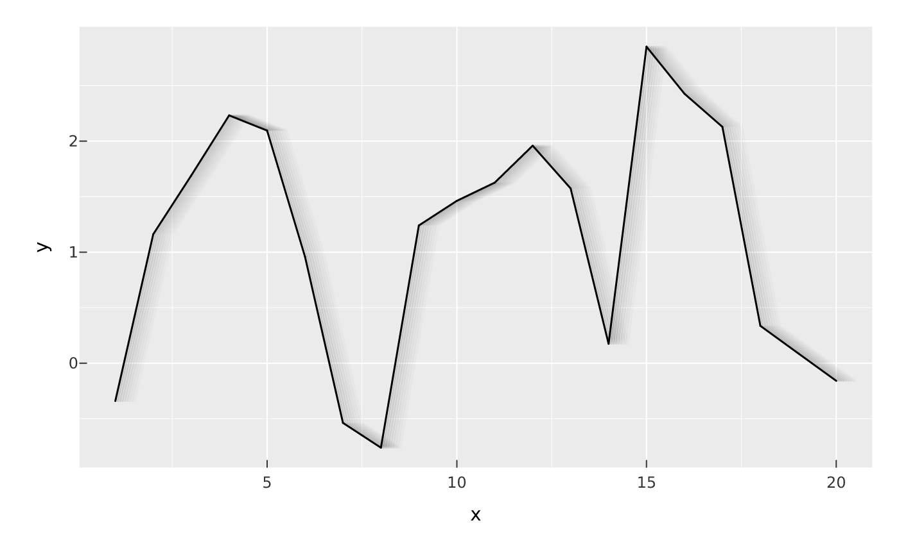
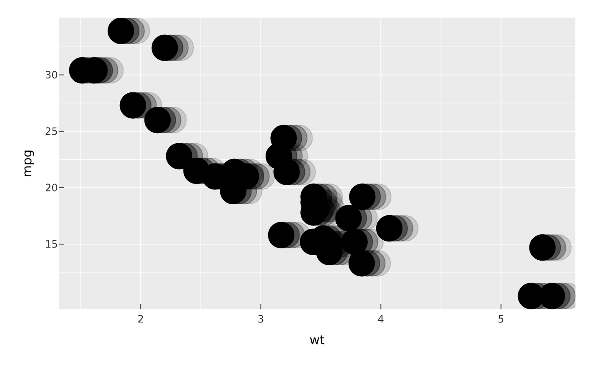

Draw a fading trail of a stroked or point mark: n copies marching off along
a direction (x, y), each further out and fainter than the last, composited
beneath the crisp original — a speed-blur or animation-still look. motion()
defaults to many close, low-opacity copies (a smooth blur streak); echo()
defaults to a few wider-spaced, more-opaque copies (discrete ghost repeats).
Both build the same effect, differing only in defaults, and apply to the same
marks as glow().
Usage
motion(
x = 3,
y = 0,
n = 8L,
alpha = 0.15,
decay = 1,
spread = 0,
blend = "normal",
color = NULL
)
echo(
x = 4,
y = 0,
n = 3L,
alpha = 0.45,
decay = 1,
spread = 0,
blend = "normal",
color = NULL
)Arguments
- x, y
Trail direction and length in millimetres (
+xright,+yup): the offset of the furthest copy. Defaults to a rightward streak.- n
Number of trail copies.
- alpha
Opacity of the nearest (strongest) copy; copies fade toward the tail.
- decay
Fade exponent shaping the opacity ramp along the trail (higher = faster fade toward the tail;
0= no fade).- spread
Optional widening, in millimetres, applied progressively toward the tail (
0keeps a constant width).- blend
Blend mode compositing the trail copies (any CSS
mix-blend-modename);"normal"for opaque ghosts.- color
Trail colour, or
NULL(default) to inherit the mark's own resolved colour.
Details
The direction is an absolute distance in millimetres (+x right, +y
up), resolved device-side via vellum's compound npc + mm unit, so the
trail keeps the same physical length and stays isotropic regardless of the
panel's size or aspect (as shadow()'s offset does).
Examples
df <- data.frame(x = 1:20, y = cumsum(rnorm(20)))
vplot(df) |> mark_line(x = x, y = y, effects = list(motion(x = 4)))

vplot(mtcars) |>
mark_point(x = wt, y = mpg, size = 4, effects = list(echo(x = 5)))
